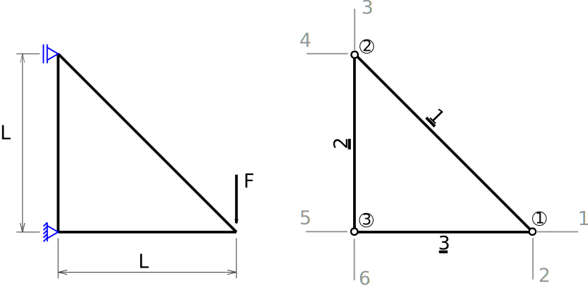
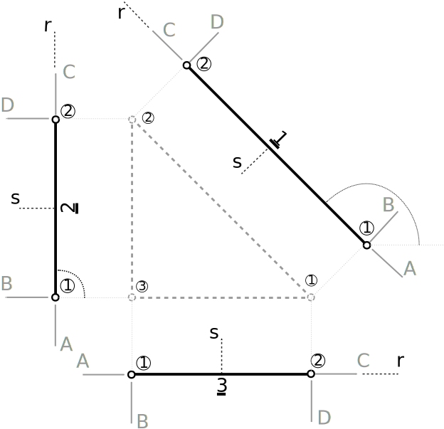
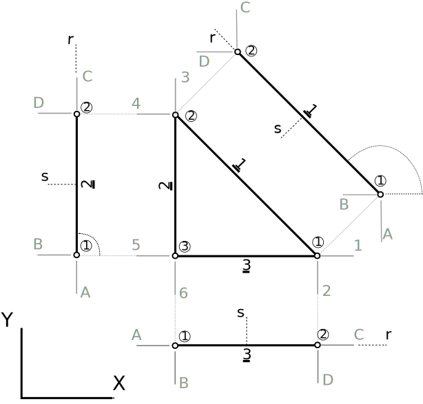
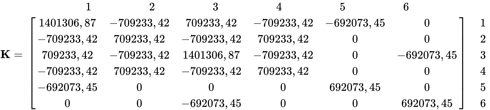
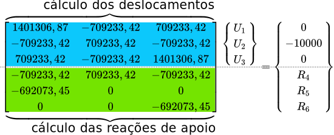
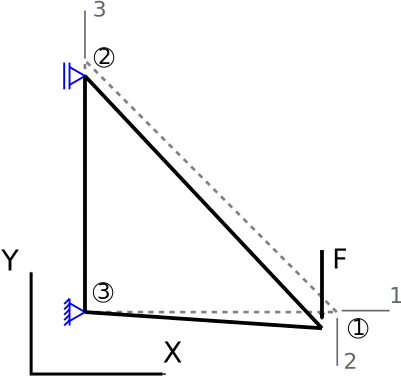

Elementos Finitos Aplicados

Bom, agora que conhecemos o equilíbrio estático dado pelo MEF e a matriz de rigidez do elemento de treliça no sistema global, é hora de voltar a nossa treliça com três barras e resolvê-la na mão, lembrando que essa treliça possui barras de aço $(E = 200 GPa)$ e alumínio $(E = 69 GPa)$, as barras vertical e horizontal são de alumínio a inclinada de aço. Todas as barras são tubulares maciças com diâmetro de 113 mm. A carga F é de 10.000 N e o comprimento L de 1,0 m.
Primeiro, vamos descrever todos os graus de liberdade globais da estrutura em nossa treliça idealizada em um diagrama de corpo livre, assim como numerar seus nós e suas barras.

A numeração dos nós, barras e graus de liberdade pode ser qualquer, porém, por questões práticas de implementação computacional sempre iniciam em 1, nunca pula-se um número e para os graus de liberdade numeram-se primeiro as direções com graus de liberdade livre, ou seja, direções as quais os apoios não influenciam.
Matematicamente, vamos descrever a numeração dos graus de liberdade através da matriz de graus de liberdade, $\textbf{GL}$. Nessa matriz definimos as linhas como sendo a numeração dos nós, ou seja, a linha 1 é relativa ao nó 1, a 2 ao nó 2 e assim por diante, e as colunas relativas às direções cartesianas, ou seja, no plano a coluna 1 é $X$ e a coluna 2 é $Y$. Então populamos essa matriz com os números dos graus de liberdade da estrutura relativos à cada nó (linhas da matriz) de acordo com cada direção cartesiana (colunas da matriz), ou seja, para nosso exemplo:
É possível colocar quantos elementos quisermos não somente um por barras. Lembrando que os resultados são calculados em uma primeira etapa nos nós, ou seja, se eu quiser um resultado no meio da barra 2, eu colocaria um nó lá, dividindo então a barra 2 em outros dois elementos, 2a e 2b, então a treliça teria um total de 4 elementos.
No caso de outros tipos elementos com mais graus de liberdade por nó, por exemplo, na treliça espacial, a matriz $\textbf{GL}$ teria mais uma coluna relativa a direção cartesiana $Z$.
Na sequência precisamos explodir a estrutura dividindo-a em elementos de treliça e para cada elemento descrever os graus de liberdade locais do elemento. A numeração dos nós do elemento é fundamentada no utilizado para sua formulação, como foram dois, sempre teremos nós 1 e 2.

A nomenclatura dos graus de liberdade nesse caso é fixa à numeração do nó, pois foi seguindo essa ordem que derivamos a matriz de rigidez. Portanto, para o nó 1, o grau de liberdade longitudinal à barra é o A, o perpendicular, B, para o nó 2, o longitudinal é o C e o perpendicular D.
O que podemos variar é quem será o nó 1 ou 2 dos elementos quando posicionados na estrutura, tanto faz ele ficar na esquerda ou direita no elemento 3 por exemplo, ou em cima ou embaixo no elemento 2. Sua posição implica no valor do ângulo $\theta$ medido e na relação dos graus de liberdade locais do elemento com os globais da estrutura completa.
Matematicamente, escrevermos a relação dos nós locais dos elementos com os globais da estrutura através da matriz de incidência do elemento, $\textbf{IE}$, na qual as linhas representam os números dos elementos, a primeira coluna representa o nó na estrutura escolhido para o posicionamento do nó 1 do elemento e a segunda coluna do nó na estrutura para o posicionamento do nó 2 do elemento. Para o nosso caso, a matriz $IE$ fica:
No caso de elementos com mais nós, imagine que nosso elemento de treliça tenha 3 nós ao invés de somente 2 (não dividindo em dois elementos, um elemento com 3 nós), a matriz de incidência deve seguir uma ordem pré-definida de posicionamentos, com o número de colunas igual ao número de nós do elemento.
O ângulo $\theta$ é sempre medido utilizando-se um referencial virtual cartesiano com uma origem no nó 1, com a mesma orientação de $(X,Y)$, percorrendo no sentido anti-horário partindo-se da direção positiva do eixo $X$ global à direção longitudinal da barra. Portanto, os ângulos para as barras 1, 2 e 3 são respectivamente:
Como calcular esses ângulos de forma simples e direta? Simples, utilizaremos as coordenadas dos nós no sistema global de acordo com a matriz de incidência dos elementos. As coordenadas dos nós 1, 2 e 3 em metros são as seguintes:
O ângulo medido no sentido anti-horário partindo-se da direção positiva do eixo $X$ global à direção longitudinal da barra pode ser medido como:
Sendo $(x_1, y_1)$ as coordenadas do nó da estrutura definido como nó 1 do elemento através da matriz de incidência, $\textbf{IE}$, e $(x_2, y_2)$ as coordenadas do nó da estrutura definido como nó 2 do elemento.
No entanto, como o cálculo da matriz de rigidez dos elementos no sistema global requer o seno e o cosseno dos ângulos das barras, podemos calculá-los diretamente com:
Portanto, os ângulos de cada uma das barras e os valores dos senos e cossenos respectivos são:
Elemento 1: $\theta = 135^o$, $cos 135^o = -\frac{\sqrt{2}}{2}$, $sen 135^o = \frac{\sqrt{2}}{2}$
Elemento 2: $\theta = 90^o$, $cos 90^o = 0$, $sen 90^o = 1$
Elemento 3: $\theta = 0^o$, $cos 0^o = 1$, $sen 0^o = 0$
Da teoria sabemos que a matriz de rigidez de um elemento de treliça no sistema global é:
Portanto, podemos escrever as matrizes de rigidez no sistema global de todos os três elementos da estrutura. Atenção às constantes $E$, $A$ e $L$, elas variam de elemento para elemento.
Elemento 1: $\theta = 135^o$ ($cos 135^o = -\frac{\sqrt{2}}{2}$, $sen 135^o = \frac{\sqrt{2}}{2}$), $E_1 = 200000 \ N/mm^2$, $A_1 = 10030,05 \ mm^2$ e $L_1 = 1414,21 \ mm$
Elemento 2: $\theta = 90^o$ ($cos 90^o = 0$, $sen 90^o = 1$), $E_2 = 69000 \ N/mm^2$, $A_2 = 10030,05 \ mm^2$ e $L_2 = 1000 \ mm$
Elemento 3: $\theta = 0^o$ ($cos 0^o = 1$, $sen 0^o = 0$), $E_3 = 69000 \ N/mm^2$, $A_3 = 10030,05 \ mm^2$ e $L_3 = 1000 \ mm$
Observe que a matriz de rigidez do elemento 1 ficou cheia, isso acontece por que os graus de liberdade locais em $(r, s)$ se decompõe em $(X, Y)$ com ambos os graus de liberdade contribuindo para ambas as direções, ou seja, por exemplo, o grau de liberdade a que no sistema local está na direção de $r$, no sistema global terá efeitos nas direções $X$ e $Y$. Observe a matriz de rigidez do elemento 2 também, o que acontece com os graus de liberdade A e C locais?
Agora precisamos criar a matriz de rigidez da estrutura como um todo, acoplando as matrizes de rigidez globais dos elementos da mesma forma que as barras estão conectadas, para garantir a correta distribuição das rigidezes nos graus de liberdade da estrutura.
O que é a matriz de rigidez da estrutura? É a matriz de rigidez que rege o comportamento estrutural da estrutura como um todo composta pelos seus elementos formulados como matrizes de rigidez globais.
Essa matriz de rigidez da estrutura pode ser criada (existem outras formas) utilizando uma regrinha simples de endereçamento, chamada indexação do elemento. A ideia dessa regra é relacionar os graus de liberdade do elemento no sistema global com os graus de liberdade da estrutura também no sistema global, utilizando a matriz dos graus de liberdade, $\textbf{GL}$, e a matriz de incidência dos elementos, $\textbf{IE}$. O endereçamento é feito por um vetor chamado indexador.
O indexador, ou $\textbf{ID}$, possui uma quantidade de elementos igual ao número total de graus de liberdade do elemento, então, no nosso caso, como temos dois graus de liberdade por nó e dois nós no elemento, o vetor indexador terá 4 elementos. Os dois primeiros elementos do indexador se relacionam com o nó da estrutura correspondente ao nó 1 do elemento, e os dois últimos ao nó da estrutura correspondente ao nó 2 do elemento (no nosso caso, para o elemento de treliça, claro que isso muda com o tipo de elemento). Por exemplo, o nó 1 do elemento 3 é o nó 3 na estrutura.
A construção do indexador é feita para cada barra com uma busca por elementos da matriz dos graus de liberdade, $\textbf{GL}$, de acordo com a matriz de incidência, $\textbf{IE}$, em função das direções $X$ e $Y$. De uma forma genérica, para o elemento de treliça plana, podemos escrever o indexador como:
Sendo b o número da barra. Observe que $IE_{b,1}$ são linha b e coluna 1 da matriz de incidência $\textbf{IE}$ e que $GL_{IE_{b,1},1}$ são linha $IE_{b,1}$ e coluna 1 da matriz de graus de liberdade $\textbf{GL}$.
O indexador nada mais é que um identificador das linhas e colunas das matrizes dos elementos no sistema global, na matriz de rigidez da estrutura no sistema global. Portanto, no nosso exemplo, como:
Então, os indexadores para os elementos 1, 2 e 3 valem:
Observe que os valores dos indexadores são exatamente os números dos graus de liberdade da estrutura para cada um dos elementos nela discretizados.

O indexador só funciona se as matrizes dos graus de liberdade e de incidência dos elementos forem corretamente construídas. O legal da indexação do elemento é que as direções globais e os sinais já estão implícitos na formulação e saem automáticos.
Por exemplo, no elemento 2 (barra 2), se a incidência fosse o nó 1 do elemento para o nó 2 da estrutura e o nó 2 do elemento para o nó 3 da estrutura, o ângulo do elemento seria $\theta = 270^o$, pois esse é medido da direção positiva do eixo $X$ no sentido anti-horário até o eixo $x$ longitudinal ao elemento, e o indexador seria $\lbrace 4, 3, 5, 6 \rbrace$.
A montagem da matriz global segue o endereçamento dado pelo indexador. Na prática é bem simples, basta colocar os valores determinados nos indexadores nas linhas e colunas das matrizes de rigidez dos elementos no sistema global. Esses valores são as novas linhas e colunas de cada elemento dessas matrizes na matriz de rigidez da estrutura.
Agora basta montar a matriz de rigidez da estrutura transportando os respectivos valores das linha e colunas para a sua correta posição dada pelo indexador na matriz do elemento. Se dois valores caírem na mesma posição, bastá somá-los, é assim que acoplamos os elementos e montamos a estrutura matematicamente.

Por exemplo, quem é o ? É o . E o ? É o + , e o é o + , resultando em , e assim por diante. As matrizes dos elementos globais não estão numeradas com suas linhas e colunas por motivos óbvios, não acha? a linha 1 é 1, a 2 é 2, etc. Somente estão numeradas com o indexador para indicar qual é o número da linha na matriz da estrutura dos elementos da linha tal na matriz do elemento global.
O equilibro estático da estrutura em MEF é regido pela mesma expressão que utilizamos para o equilíbrio do elemento englobando todos os graus de liberdade da estrutura, ou seja, o equilíbrio estático da estrutura pelo MEF é dado pela equação:
Sendo $\textbf{U}$ o vetor de deslocamentos da estrutura e $\textbf{F}$ o vetor de forças nodais da estrutura.
Por que é válida a mesma consideração local do elemento (lembra, princípio dos trabalhos virtuais, deslocamentos virtuais, etc...) para toda a estrutura globalmente? Se generalizássemos o princípio dos trabalhos virtuais para toda a estrutura, considerando os trabalhos internos em todos os elementos e os externos de todas as forças, chegaríamos a mesma conclusão.
Os vetores $\textbf{U}$ e $\textbf{F}$ representam os deslocamentos da estrutura, definidos pelos graus de liberdade, e as forças nodais relativas aos graus de liberdade. Portanto, podemos escrevê-los de forma genérica como:
Não sabemos, por enquanto, os valores dos deslocamentos em cada grau de liberdade do vetor $\textbf{U}$, afinal essas são as incógnitas do problema (quer dizer, alguns valores nos conhecemos como veremos a seguir). Já o vetor de forças nodais $\textbf{F}$ nós conhecemos completamente, basta entender como as forças nodais se relacionam com os graus de liberdade e aplicar as condições de contorno.
Como você pode perceber a matriz $\textbf{K}$ tem algumas importantes propriedades, ela deve ser simétrica e singular, ou seja, com o determinante igual a zero e, portanto, não inversível. Então, como vou resolver o equilíbrio estático do MEF?? $\textbf{K}\textbf{U}=\textbf{F}$ Resposta: aplicando às condições de contorno.
Observe que na matriz de rigidez da estrutura, $\textbf{K}$, as linhas e colunas representam os graus de liberdade da estrutura e cada elemento representa a rigidez referente ao efeito de certo grau em outro. Sendo assim, para aplicar as condições de contorno do problema, que são os apoios simples e rotulado no nosso caso, basta observarmos quais graus de liberdade esses apoios influenciam e aplicar essa influência no vetor de deslocamentos da estrutura e no vetor de forças nodais da estrutura.
Da imagem notamos que o apoio simples no nó 2 influencia o grau de liberdade 4 apenas e que o apoio rotulado no nó 3 influencia os graus de liberdade 5 e 6. Ainda, a força F de 10.000 N está orientada no sentido negativo do grau de liberdade 2. Sabendo disso, podemos montar nossos vetores de deslocamentos nodais $\textbf{U}$ e de foças nodais $\textbf{F}$ da estrutura como:
Os deslocamentos $U_4$, $U_5$ e $U_6$ são iguais à zero pelas restrições dos apoios nas respectivas direções dos graus de liberdade relacionados à esses deslocamentos. As forças $F_1$ e $F_3$ são zero pois nenhuma força atua nas respectivas direções dos respectivos graus de liberdade. As forças $F_4$, $F_5$ e $F_6$ são relacionadas com as restrições impostas pelos apoios nas respectivas direções dos graus de liberdade e, portanto, são exatamente as reações de apoio provocadas por essas restrições. Então, nosso equilíbrio se escreve:

Somente foi possível separar os deslocamentos colocando os 3 primeiros como as incógnitas do problema e os 3 últimos restringidos pelas condições de contorno dadas pelos apoios (o mesmo com as forças nodais, mas ao contrário) por que numeramos primeiro os graus de liberdade livres da estrutura e construímos a matriz dos graus de liberdade, $\textbf{GL}$, em função disso. De outra forma, precisaríamos aplicar uma mudança de linhas e colunas na matriz de rigidez e de linhas aos vetores de deslocamentos e forças para chegar a esse resultado, sem o qual, não poderíamos resolver o sistema aplicando a separação das variáveis e tal procedimento é caro computacionalmente.
Observe bem a equação matricial de equilíbrio que escrevemos acima e tente visualizar na forma de um sistema de equações. Note que as três últimas colunas da matriz de rigidez sempre estão multiplicadas por zero (porção não utilizada), ou seja, não influenciam em nada na resolução do nosso sistema (inclusive nem precisaríamos montar). Então, como primeira simplificação, podemos reescrever o equilíbrio estático dado pelo MEF da nossa treliça de três barras como:

Agora, olhe bem para a matriz de rigidez simplificada acima e sua relação com os deslocamentos incógnitas e as forças nodais. Perceba que as três primeiras linhas da matriz de rigidez simplificada são responsáveis pela determinação dos deslocamentos incógnitos, visto que se iguala a forças nodais conhecidas e que, as três últimas linhas da matriz de rigidez simplificada são responsáveis pela determinação das reações de apoio em função dos deslocamentos já calculados. Ou seja, podemos separar a matriz de rigidez simplificada e consequentemente nosso equilíbrio estático em:
Para cálculo dos deslocamentos, ou, de forma simplificada:
Sendo $\textbf{K}_U$ a porção da matriz de rigidez da estrutura responsável pelo cálculo do deslocamento, $\textbf{U}_U$ os deslocamentos a serem calculados e $\textbf{F}_U$ a porção do vetor de forças nodais equivalentes com as forças aplicadas na estrutura.
Para cálculo das reações de apoio, ou, de forma simplificada:
Sendo $\textbf{K}_R$ a porção da matriz de rigidez da estrutura responsável pelo cálculo das reações de apoio, $\textbf{U}_U$ os deslocamentos já calculados e $\textbf{F}_R$ a porção do vetor de forças nodais equivalentes relativa às reações de apoio.
O cálculo dos deslocamentos é feito resolvendo-se o seguinte sistema de equações, escrito na forma matricial:
Existem diversas formas de resolvê-lo, já que trata-se de um sistema de equações lineares com várias incógnitas, possível e determinado e linearmente independente.
Em termos matriciais, a matriz de rigidez simplificada para cálculo dos deslocamentos, $\textbf{K}_U$ deve ser sempre simétrica, não singular e positivo definida. Portanto, podemos resolver pela regra de Krammer, eliminação Gaussiana, fatoração de Cholesky, decomposição QR ou ainda inversão da matriz para posterior multiplicação pelas forças nodais. Nós vamos utilizar a fatoração de Cholesky, por ser mais rápida para sistemas com vários graus de liberdade.
A fatoração (ou decomposição) de Cholesky procura decompor uma matriz $\textbf{A}$ na forma $\textbf{A} = \textbf{T}\textbf{T}^T$, na qual $\textbf{T}$ é uma matriz triangular inferior com elementos da diagonal principal estritamente positivos. No entanto, a matriz $\textbf{A}$ deve simétrica, não singular e positivo definida, como no nosso caso, portanto, a fatoração de Cholesky se aplica. Além disso, a fatoração de Cholesky é conhecida pela velocidade na solução quando temos sistemas com muitos graus de liberdade mas, também, pela fragilidade e instabilidade numérica quando a matriz é próxima da singularidade ou possui baixo número de linhas ou colunas independentes.
De uma forma prática para uma matriz $n \times n$ vamos fazer o seguinte (lembrando que a matriz é simétrica, então $a_{k,n} = a_{n,k}$):
Sendo que os elementos da matriz $\textbf{T}$ são calculados da seguinte forma, para a coluna 1 de $\textbf{T}$:
Para a coluna $k$ de $\textbf{T}$, sendo $k=2,3,...,n$:
Portanto, para o nosso caso com a matriz $\textbf{K}$ com $n=3$, ou seja, $3 \times 3$:
Calcula-se (lembrando que $a_{k,n} = a_{n,k}$):
E, portanto:
e
Agora, para resolver precisamos aplicar uma substituição direta e uma retro substituição em $\textbf{T}$ e $\textbf{T}^T$ respectivamente. Precisamos calcular um vetor $\textbf{c}$, tal que:
Então, podemos encontrar os deslocamentos com:
Esse vetor $\textbf{c}$ é calculado da seguinte maneira, para o elemento 1 de $\textbf{c}$:
Para os demais elementos com $i=1,2,...,n$:
E, portanto, para o nosso caso, com $i=1,..,n$ e $n=3$:
A solução, então, dos deslocamentos $\textbf{U}$ pode ser calculada pela retro substituição em $\textbf{T}^T$, sendo o último elemento de $\textbf{U}$ calculado como:
E os demais deslocamentos com $i=1,2,...,n-1$:
E finalmente... chegamos aos valores dos deslocamentos (sendo $n=3$), resolve-se do $U_3$ ao $U_1$:
Portanto:
Agora, a treliça deslocou no nó 1, nos graus de liberdade 1 e 2 respectivamente $U_1 = -0,01445$ e $U_2 = -0,042999$, e no nó 2, no grau de liberdade 3 $U_3 = -0,01445$. Certo, mas deslocou o que? Metros? Centímetros? Quilômetros? O MEF não trabalha com unidades, portanto, todos os valores de entrada devem possuir unidades compatíveis para uso na formulação. Nossos dados de entrada foram: aço com módulo de elasticidade de $E = 200000 N/mm^2$, o alumínio com módulo de elasticidade $E = 69000 N/mm^2$, a área da seção transversal das barras de diâmetro de 113 mm de $A = 10030,05 mm^2$, a carga F de 10.000 $N$ e os comprimentos de $L = 1000 mm$ e $L = 1414,21 mm$. Esses dados foram definidos quando calculamos as matrizes de rigidez locais. A pergunta é: essas unidades são compatíveis? Vejamos, a carga está com a mesma unidade de força da elasticidade? Sim, $N$ (newton). A área e as elasticidades possuem a mesma unidade de área? Sim, $mm^2$ (milímetros quadrados). Os comprimentos possuem unidade compatível com as áreas? Sim, estão definidos em $mm$, a mesma unidade das áreas. Ou seja, sim, nossa análise possui unidades compatíveis, e portanto, o nosso deslocamento é dado em $mm$, ou seja:
Por que esses valores deram negativos? Lembra das direções que impomos aos graus de liberdade globais, definidas nos sentidos positivos dos eixos $X$ e $Y$, então, se o deslocamento desse positivo, significa que sua direção seria a mesma do grau de liberdade, no caso como deu negativo, significa que a direção do deslocamento é oposta à do grau de liberdade. Em outras palavras, o nó 2 da estrutura vem para baixo e o nó 1 da estrutura vem para baixo e para a esquerda.

Com os deslocamentos calculados, podemos utilizar a separação de variáveis que foi feita com a matriz de rigidez e os vetores de deslocamentos e forças nodais para calcular as reações de apoio.
Substituindo os valores dos deslocamentos.
E, portanto, após a multiplicação da porção da matriz de rigidez pelo vetor de deslocamentos nodais, chegamos à:
Ou seja, as reações de apoio nos graus de liberdade 4 do nó 2, 5 e 6 do nó 3 valem respectivamente $R_4 = −9999,482 N$, $R_5 = 10000,461 N$ e $R_6 = 10000,461 N$, que significam tração no nó 4 (sentido oposto ao do grau de liberdade) e compressão nos sós 5 e 6.
A unidade você já sabe o porque. Mas, não deveriam ser 10000, -10000 e 10000 respectivamente? Por que ficou aproximado? Por que o MEF é um método de solução aproximado, e a aproximação depende muito de como foi formulado o problema em relação ao refino, tanto de malha, quanto das funções de forma. Em outras palavras e de forma muito superficial, se você utilizar mais elementos ou aumentar o grau do polinômio das funções de forma, você terá melhores aproximações. É, não é bem assim existem outros fatores que influenciam na aproximação do resultado, mas por enquanto está valendo.
A determinação das tensões nas barras é feita no elemento original, no sistema local, sem nenhuma rotação para compatibilização dos sistemas dos graus de liberdade, ou seja, primeiro precisamos escrever os deslocamentos da estrutura como deslocamentos em cada elemento. Para isso, vamos desacoplar o vetor de deslocamentos nodais e escrever um vetor de deslocamentos globais (total, inclusive com os deslocamentos restringidos pelos apoios) para cada elemento chamados de , e para os elementos 1, 2 e 3 respectivamente.
Essa montagem é feita utilizando a indexação do elemento aplicando-se o indexador ao contrário, agora os valores do indexador irão corresponder às linhas e colunas do vetor de deslocamentos da estrutura e as linhas e colunas do indexador às linhas e colunas dos vetores de deslocamentos globais dos elementos. Lembra dos indexadores para cada elemento?
Aplicar o indexador ao contrário significar que o grau de liberdade definido no indexador vira o grau de liberdade do elemento no sistema global do número da linha do indexador relativa. Por exemplo, no indexador 2, do elemento 2, os graus de liberdade globais 5, 6, 4 e 3 definidos no indexador, que são os globais da estrutura, viram os graus de liberdade 1, 2, 3 e 4 respectivamente no elemento 2 no sistema global.
Portanto, sendo o vetor de deslocamentos da estrutura igual a:
Os vetores de deslocamentos dos elementos no sistema global resultam em:
Esses são os deslocamentos dos elementos no sistema global. Precisamos transformá-los para o sistema local dos elementos. Lembra como decompomos os deslocamentos do elemento no sistema global na teoria? Veja aqui.
Sendo a matriz de decomposição $\textbf{D}$ função do ângulo de cada barra (anti-horário partindo do sentido positivo do eixo $X$ global):
Usando a equação \eqref{deslGlobLoc} em cada um dos vetores de deslocamentos dos elementos obtemos os deslocamentos no sistema local do elemento:
Elemento 1: $\theta = 135^o$ ($cos 135^o = -\frac{\sqrt{2}}{2}$, $sen 135^o = \frac{\sqrt{2}}{2}$)
Elemento 2: $\theta = 90^o$ ($cos 90^o = 0$, $sen 90^o = 1$)
Elemento 3: $\theta = 0^o$ ($cos 0^o = 1$, $sen 0^o = 0$)
Definidos os deslocamentos dos elementos, com os resultados já com os graus de liberdade transversais eliminados do vetor de deslocamentos, precisamos determinar as suas deformações. Para tal vamos utilizar a equação que determina as deformações com as premissas do MEF.
Portanto, as deformações para cada elemento no sistema local ficam:
Elemento 1: ($L_1 = 1414,21mm$)
Elemento 2: ($L_2 = 1000mm$)
Elemento 3: ($L_3 = 1000mm$)
E, por fim, para calcular as tensões basta utilizar a equação constitutiva do material das barras da treliça definidos para cada elemento.
Elemento 1: ($E_1 = 200000 N/mm^2$)
Elemento 2: ($E_2 = 69000 N/mm^2$)
Elemento 3: ($E_3 = 69000 N/mm^2$)
E os esforços nas barras? Afinal, como é o caso de uma estrutura metálica as equações apresentadas pela norma se referem à esforços para o dimensionamento. É simples, não é uma barra de uma treliça, com tensões normais uniformes e constantes ao longo da barra? Pois bem, é só multiplicar a tensão pela área para obter o diagrama de esforços normais em cada barra da estrutura.
Elemento 1: ($A_1 = 10030,05 mm^2$)
Elemento 2: ($A_2 = 10030,05 mm^2$)
Elemento 3: ($A_3 = 10030,05 mm^2$)
O que significa a tensão com valor positivo? E as com valores negativos? E agora? Você conseguiria dimensionar essas barras circulares maciças da treliça? Dica: NBR 8800.
Na mão é muito bom para entender os conceitos e procedimentos do método, mas um pouco demorado, não acha? Lembra da ideia de implementar um programinha para resolver treliças planas quaisquer? Vamos ver algumas formas de implementar a metodologia acima de maneira genérica usando python... em breve!